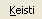

- Atidaryti mažiausiai apkrautų laiko intervalų paieškos nustatymų lauką vienu iš būdų:
- Pagrindinėje įrankių juostoje paspausti mygtuką
 .
. - Meniu juostos skiltyje  paspausti mygtuką .
- Bet kuriuo metu paspausti „Vald+F“.
- Atsiradusioje sekcijoje užpildyti paieškos duomenis.
- Spausti mygtuką „Ieškoti mažiausiai apkrauto intervalo“.